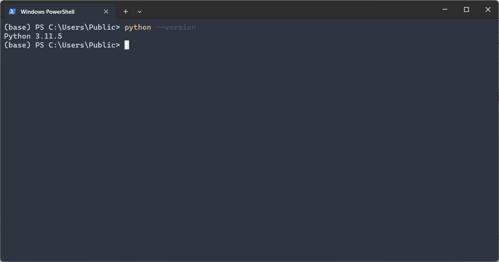

Downloading and Installing Python
Setting up Python on your computer is the first step in your programming journey. This section guides you through downloading Python from its official website and ensuring it's correctly installed on your system.
Visit the Python Website
- Navigate to Python's official website.
- Look for the download button for the latest Python version and click it. This ensures you have the most up-to-date features and security patches.
Installation Process
- Locate and open the downloaded Python installer file.
- Windows Users: A crucial step is to check the Add Python to PATH option before proceeding. This makes Python accessible from the command line.
- macOS/Linux Users: Follow the instructions presented by the installer. They typically involve a series of simple clicks.
Verifying Installation
- To ensure Python is correctly installed, open your system's command line interface:
- Windows: Use the Command Prompt or PowerShell.
- macOS/Linux: Use the Terminal application.
- Type
python --versionand press Enter. This command checks the installed Python version. - If the installation is successful, you'll see the Python version number displayed, like
Python 3.11.5.

Image Description: Screenshot showing the terminal window with the successful output of Python 3.11.5 after typing python --version.